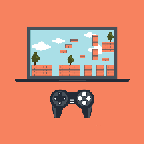

Game developers design and create video games for computers and video game consoles. They are involved in the conception as well as the execution of the game creation. While education requirements vary based on employers, many prospective game developers seek a bachelor's degree in computer science, software engineering or a related field.
Game developers, more specifically known as video game developers or video game designers, are software developers and engineers who create video games. Game developers may be involved in various aspects of a game's creation from concept and story writing to the coding and programming. Other potential areas of work for a game developer include audio, design, production and visual arts.
Many components are involved in the development of a video game. Designers, producers and graphic artists all contribute to the final product. However, programmers and software developers turn the idea into code, which provides the game with its operating instructions. Game and software developers create the core features of a video game. Duties of a game developer may include:
Creating story lines and character biographies
Conducting design reviews
Designing role-play mechanics
Creating prototypes for staff and management
Documenting game design process